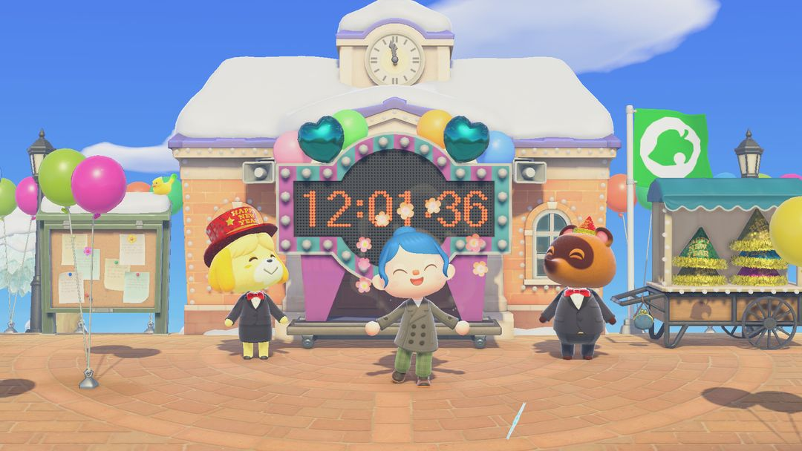
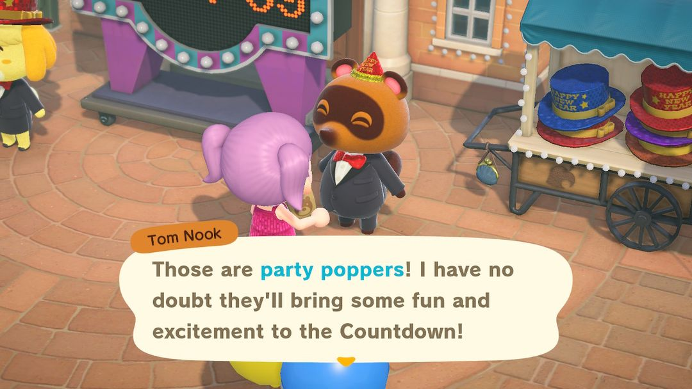
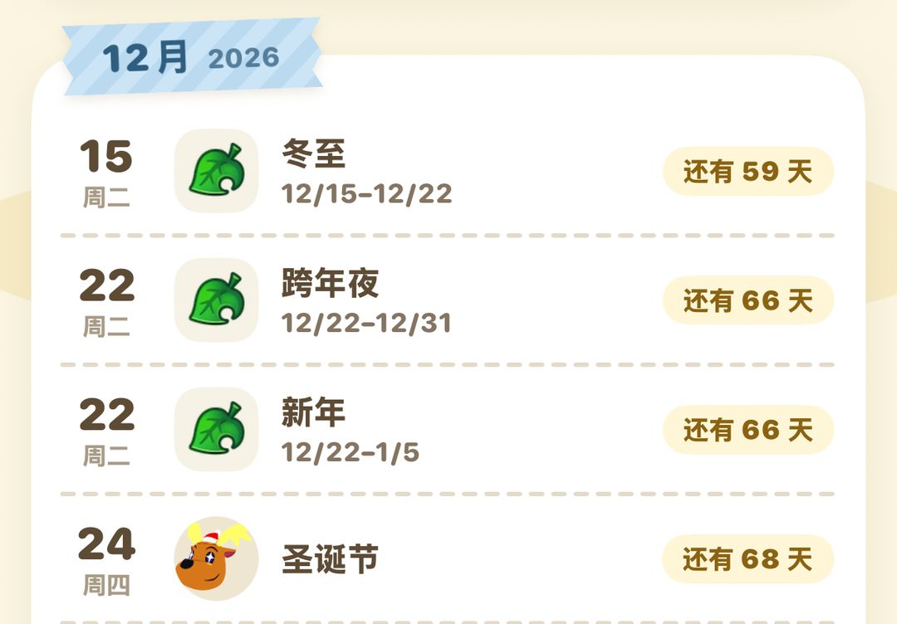

跨年倒数和元旦：12 月 31 日晚上来广场
西施惠发荧光棒、狸克送拉炮，元旦前后 Nook购物卖新年家具
每年 12 月 31 日，岛上会办一场跨年倒数。这天服务处歇业一天，西施惠和狸克把场子搬到门口的广场上，零点一到全岛放烟花，岛民围在广场上又唱又跳，一直热闹到凌晨 2 点。南北半球是同一天。
要准备的东西不多：白天抽空去广场找西施惠和狸克，把荧光棒和拉炮领到手，口袋里空出几格就行。另外从 12 月 22 日起，Nook购物会上架一批新年家具和年节料理，有的只卖到 31 日，想要的话别拖到元旦以后。
0112 月 31 日这一天
跨年倒数的日期是固定的，每年都在 12 月 31 日，南北半球一样，过了零点就是元旦。
这天服务处关着门，西施惠和狸克一整天都守在门口的广场上。广场上挂起了倒计时牌，拉上彩灯，系上气球，看着就像要办晚会。白天随时都能过去转转、领东西，真正热闹起来要等晚上 11 点以后。

12 月 31 日白天，服务处门口挂上了倒计时牌，右边是狸克的小摊（图：Nookipedia）
02白天先去广场领东西
找西施惠说话，她会递给你一根荧光棒，倒数的时候大家一起挥。
旁边的狸克会送你 5 个拉炮，零点前后拿出来拉。他还支了个小摊卖新年帽，500 铃钱一顶，颜色可以自己挑；有的年份摊上换成了新年丝质礼帽。送的拉炮不够放的话，摊上也能买，5 个一组。
买了新年帽就戴上它去找岛民聊天，有时岛民也会把自己的帽子戴起来。
持有物要是塞满了，他们就没法把东西给你，去之前先空出几格。白天忙忘了也不要紧，过了零点再去找他们，荧光棒和拉炮照样会补给你。

狸克送你拉炮，身后的小摊卖新年帽（英文版画面）（图：Nookipedia）
03从晚上 11 点到凌晨 2 点
晚上 11 点一过，岛上的气氛就一步步变了。按时间顺序大概是这样：
| 时间 | 发生什么 |
| 23:00 | 整点音乐换成跨年专用的 |
| 23:30 | 岛民陆续往广场走 |
| 23:55 | 西施惠、狸克和岛民拿出荧光棒 |
| 最后 1 分钟 | 倒计时牌每秒响一声，最后 10 秒更响 |
| 0:00 | 播放跨年动画，响起岛歌、放烟花 |
| 0:00～2:00 | 烟花不停，岛民在广场唱歌跳舞 |
| 2:00 以后 | 音乐变安静，岛民不跳了，西施惠和狸克还在 |
23:55 前后赶到广场最合适，正好跟大家一起举起荧光棒，听着倒计时牌一秒一秒地响。
零点那段动画不管你人在岛上哪个角落都会播，就算正坐着航平的船出海，也能望见岛上的烟花。第一次在游戏里跨年，倒数到零的那一刻会达成一项成就，拿到 1000 Nook里数。
注意零点前后别在外面招惹狼蛛、蚊子这类会把你打断的东西。万一正好被别的事件打断，零点那段动画可能就错过了。
零点后的广场，烟花一直放到凌晨 2 点（2021 年的画面）（图：Nookipedia）
动画播完，烟花还会接着放到凌晨 2 点，岛民们就在广场上唱歌跳舞。2 点以后音乐静下来，岛民也歇了，只有西施惠和狸克还留在广场上。
小提示零点以后挨家去岛民屋里串串门，在家的岛民也在屋里唱歌跳舞。
04元旦这天
1 月 1 日一整天都放新年音乐，早上西施惠的广播也会给全岛拜年。这天去服务处的狸端机看一眼，能领到 500 Nook里数，别忘了。
元旦的天色也和平时不一样：早上和傍晚太阳压得很低，影子拉得老长。想拍几张新年照片，可以挑这两个时段去海边。
05Nook购物的新年商品
2.0 以后，新年商品从 12 月 22 日开始在 Nook购物上架（2.0 以前要等到 26 日），各个地区的商品大家都能买到，不用看自己是哪个地区。买过一次的会收进目录，不过只有在季节内才能再订，过了季想补货就得等明年。
这批商品分两拨下架：跨年夜吃的几样只卖到 12 月 31 日，正月的摆设和料理能卖到 1 月 5 日。
| 商品 | 价格（铃钱） | 卖到哪天 |
| 跨年荞麦面 | 1,300 | 12 月 31 日 |
| 柏林果酱面包、12 粒葡萄 | 各 1,200 | 12 月 31 日 |
| 奥利维耶沙拉、气泡饮料 | 各 1,000 | 12 月 31 日 |
| 门松 | 2,580 | 1 月 5 日 |
| 注连绳装饰 | 2,000 | 1 月 5 日 |
| 镜饼 | 1,800 | 1 月 5 日 |
| 御节料理 | 5,000 | 1 月 5 日 |
| 日式红包 | 500 | 1 月 5 日 |
| 当年的生肖摆饰 | 1,600 | 1 月 5 日 |
| 掷柶游戏 | 1,300 | 1 月 5 日 |
表里的御节料理和日式红包是 2.0 才加进来的。另外 1 月 5 日到 7 日还单独卖七草粥，1,200 铃钱一份。
小提示生肖摆饰每年只卖当年的那一只。想把 12 只凑齐，要么一年一年慢慢买，要么找朋友换。

动森圈圈的活动日历：跨年夜、新年两批商品都从 12 月 22 日开卖
动森圈圈 · 小程序和 iOS App 都搜「动森圈圈」